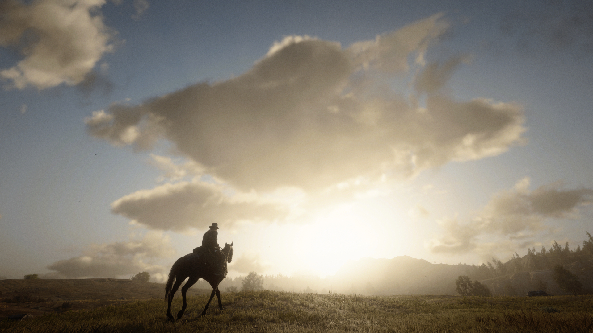
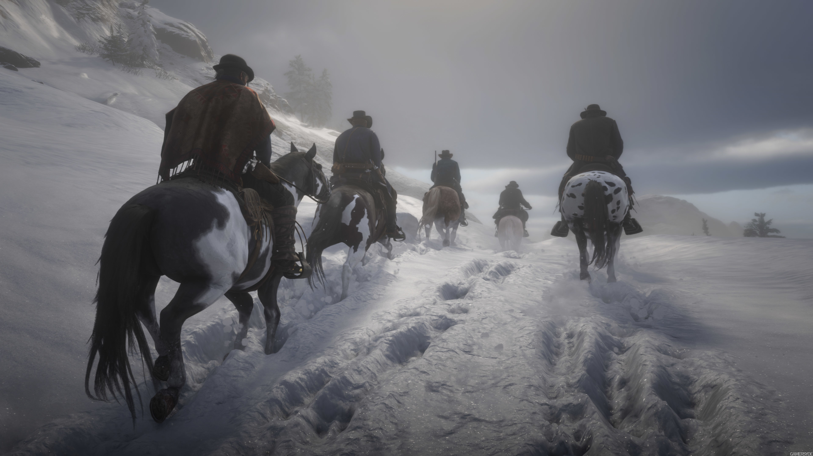

Piattaforme Compatibili:


Red Dead Redemption II (detto anche RDR2) è uno dei migliori (se non IL migliore) giochi di sempre creati dalla azienda Americana multimiliardaria
Rockstar Games (wiki).
|
|




Di cosa parla il gioco?
Nel maggio del 1899, l'era dei fuorilegge volge al termine. La banda guidata dal carismatico Dutch Van der Linde è costretta a una fuga disperata dopo che un colpo a un traghetto nella ricca città di Blackwater finisce in un sanguinoso disastro. Braccati dagli agenti della Pinkerton e con le autorità alle calcagna, i sopravvissuti abbandonano il loro bottino e si dirigono verso le gelide montagne dei Grizzly per far perdere le proprie tracce. Nonostante la stagione, una tempesta di neve implacabile blocca la banda nel villaggio minerario abbandonato di Colter.
Storia
Divertiti a vivere la vicenda di Red Dead Redemption II con Arthur Morgan, rapinando banche e uccidendo gli O'Driscoll.
Online
Divertiti (con un personaggio creato da te) con altri giocatori in giro per la mappa di Read Dead Redemption II.